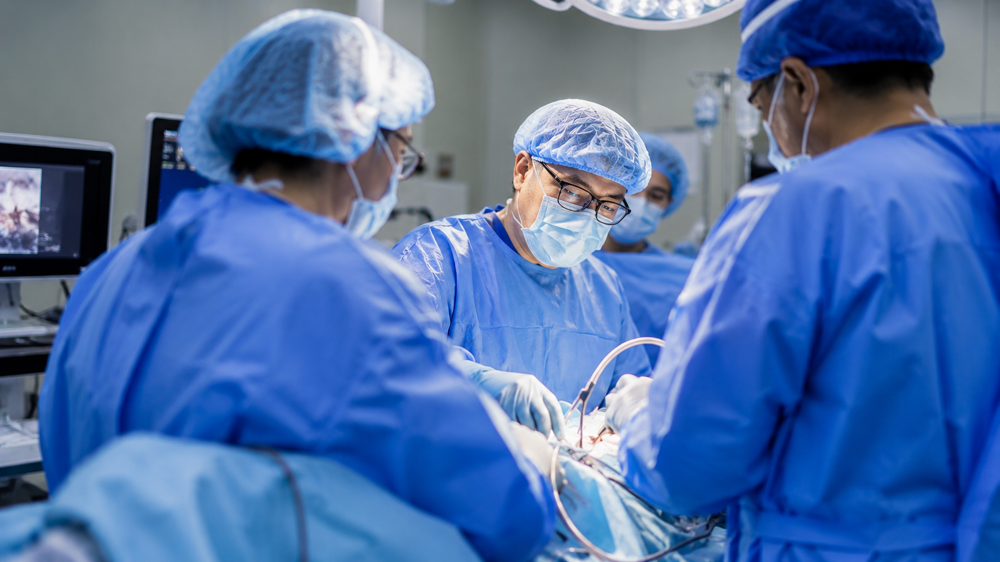

Surgical Experience & Volume
Top Chinese orthopedic teams perform significantly more procedures than many Western counterparts, building practical experience in complex joint cases.


We connect international patients with world-leading orthopedic institutions in China to help preserve your joints through comprehensive procedures and care plans. Connect for a case review with top surgeons and Asana's case consultant.
Explore Global JointsInstead of navigating a foreign system alone, you get a curated medical pathway and bilingual support from the first feasibility review through rehabilitation.
Typical access window for assessment pathways after records and imaging are reviewed.
Dedicated rehabilitation options for patients who need a longer supported recovery period.
Hospital entry, translation, logistics, documentation, and follow-up coordination in one place.
Top Chinese orthopedic teams perform significantly more procedures than many Western counterparts, building practical experience in complex joint cases.
Advanced sports medicine, tiered treatment, and robotic-assisted precision surgery from a global leading joint research and clinical center help preserve the natural joint whenever clinically realistic.
Early detection markers, full-body scans, and specialist consults for preventative peace of mind.
From deep cleaning to cosmetic veneers, add trusted dental care to the same trip.
Comprehensive eye exams, LASIK assessment, and high-end optical services.
Compare long waits and high private-pay pricing with a curated China pathway that includes hospital coordination, concierge support, and recovery planning.
US private estimate: $30,000-$80,000
China pathway: $10,000-$15,000 medical package range
Support: Flights, hotel, translation, and records coordination available
Send your current wait-time, X-rays, MRI, or CT scans. We will prepare the case for review and outline whether China is a realistic option.